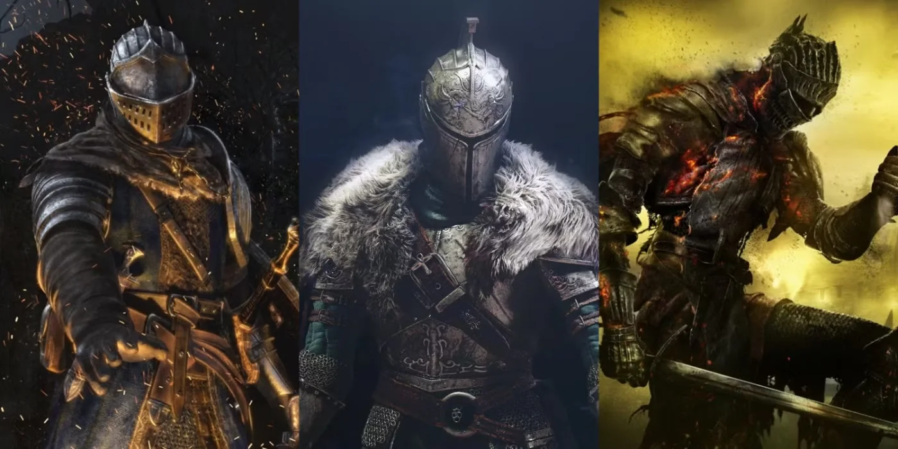

Dark Souls Trilogy
The trilogy that defined the genre set a template countless games would follow. Its interconnected world design made exploration feel like solving a three-dimensional puzzle, and its storytelling, fractured across item descriptions and environmental details, created an entirely new kind of player engagement in which making sense of the world became a community effort.